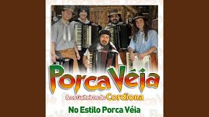

Levantando poeira, o sinuelo berra
Batendo sinceros sobre o pastoreio
Refuga o mestiço e vem golpeando o laço
Cincha meu picaço, atirando o freio
Cevei o meu mate bem de madrugada
Comecei a lida no clarear do dia
Num fundão de campo, a gritar com a boiada
Pra vim pra mangueira, numa manhã fria
Turuno brasino arisco e ligeiro
Atiro os pucheiros no meu cusco amigo
Garroteando a tropa no berro e no coice
Arrojado e valente, a camperear comigo
Quem tem fé no braço armada pachucheira
Retumba o guasqueaço sobre o tirador
Já cai acarcado ao centro da mangueira
Pronto pra peixeira do peão castrador
Ao chegar a tarde, agarrei a cordeona
E fiz a chorona ecoar no espaço
Depois encilhei uma égua alazona
Me fui pra mangueira dar um tiro de laço
Levantei o braço e mandei o trançado
Pialei um zebu, que já tombou berrando
Em poucos segundos, levantou castrado
Rebatendo o chifre, saiu tropicando
A cachaça na guampa reluz a memória
Vai ficar na história o que eu fiz aqui
Me disse o patrão: faça pra mim agora
Um verso pra estância Itacorubi
Se de mão em mão, a canha vai e vem
Os bagos na cinza é só bater o tição
Castração a pialo, outra igual não tem
Esse é o ritual aqui do meu rincão
Ao chegar a tarde, peguei a cordeona
E fiz a chorona ecoar no espaço
Depois encilhei uma égua alazona
Me fui pra mangueira dar um tiro de laço
Levantei o braço e mandei o trançado
Pialei um zebu que já tombou berrando
Em poucos segundos, levantou castrado
Rebatendo o chifre, saiu tropicando
A cachaça na guampa reluz a memória
Vai ficar na história o que eu fiz aqui
Me disse o patrão: faça pra mim agora
Um verso pra estância Itacorubi
Se de mão em mão, a canha vai e vem
Os bagos na cinza é só bater o tição
Castração a pialo, outra igual não tem
Esse é o ritual aqui do meu rincão
